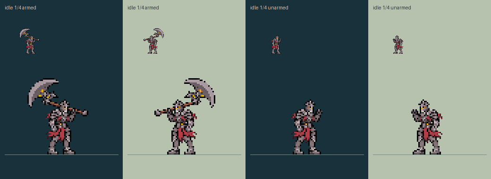
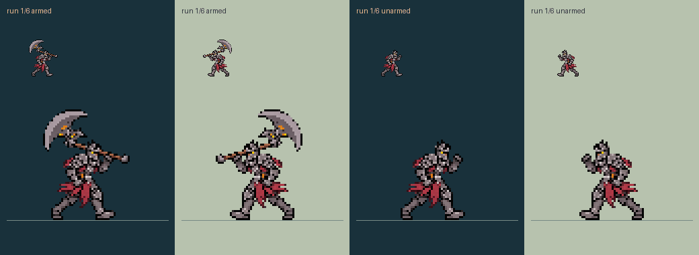
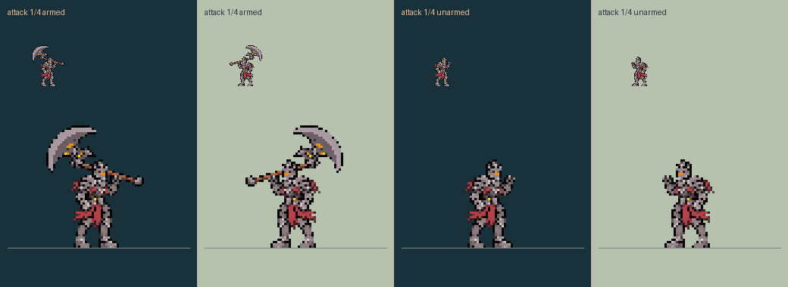
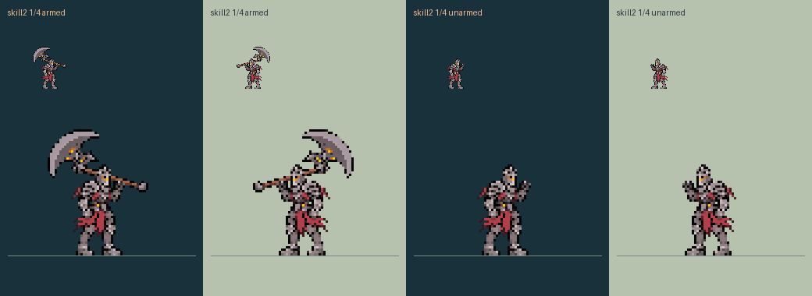
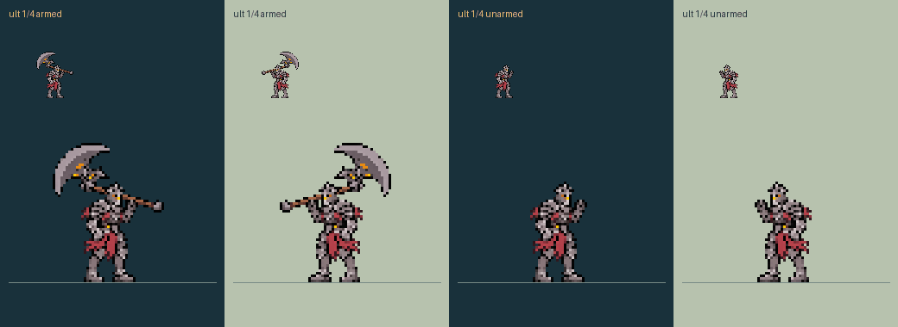
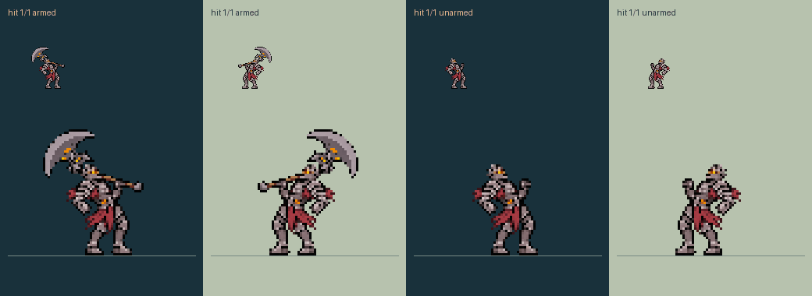
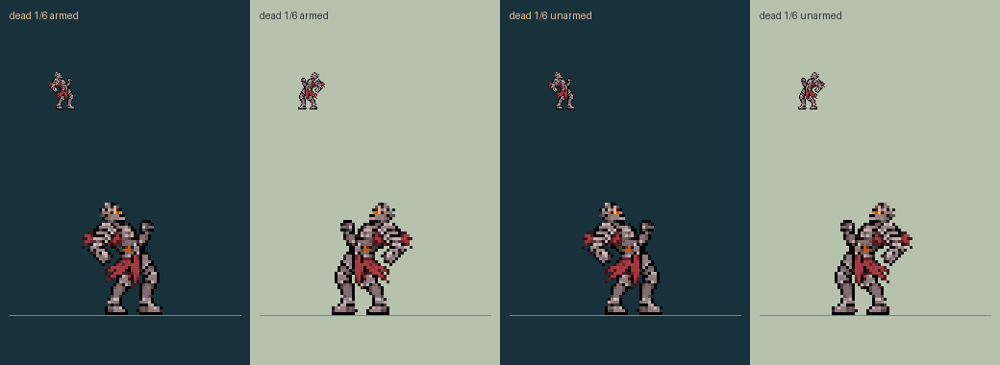
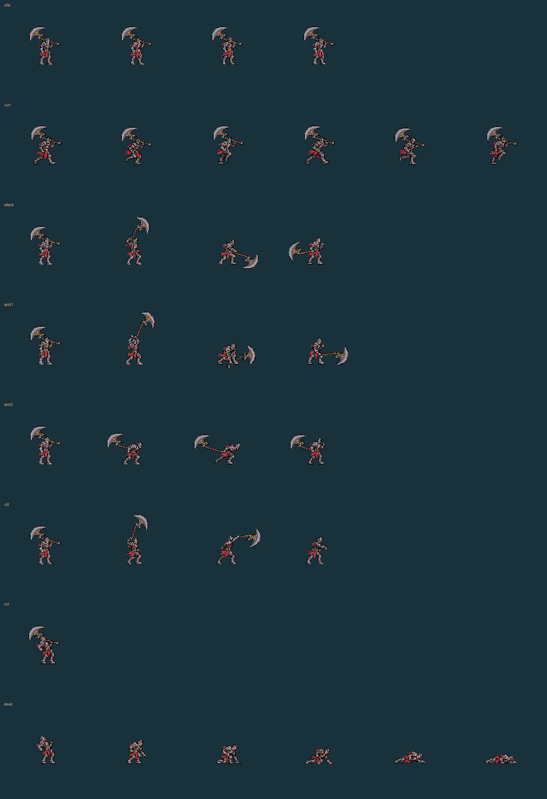
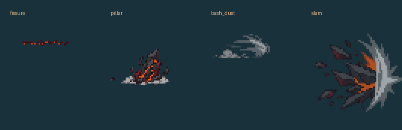

The corrected light-grey/crimson identity now has all eight animation cycles. Every body drawing is complete and connected; only the separate axe is transformed. Both facings and both weapon states are shown at 1× and 3× on dark/light terrain.
Open the playable Lab and animation inspector
Idle: four frames. Walk: six approved complete-body drawings, with slower nominal 160 ms frames and distance-driven pacing in the Lab. Gameplay movement speed is unchanged.


The same strike reads as an axe swing while armed and a gauntlet strike without the axe. Bulwark raises the weapon, strikes down and recovers; its fissure stays on the ground.



The held axe disappears during travel, the leap and the planted-axe state. The final throw drawing is empty-handed.


The live Lab holds the final corpse frame rather than looping death. The game owns its ordinary base-body death animation; no extra corpse is emitted.


Existing effect pixels and anchors are preserved. Flying-axe phase lifetimes match the one-tick flight clock; other effect durations are unchanged. The planted axe has a dedicated ground-aligned static phase.
Body, weapon and effect assets are included in the repository and share their exact pixels with the Lab. Total decoded artwork: 16 MiB; largest atlas: 2048 pixels. No new animation locks or gameplay changes.
Actual-game body/weapon timing, targeting, cage limitations and crowded fights remain pending. Lab movement, mitigation and cage behaviour are simulated host models. Installation, real-career migration, balance harness and release packaging remain separate.